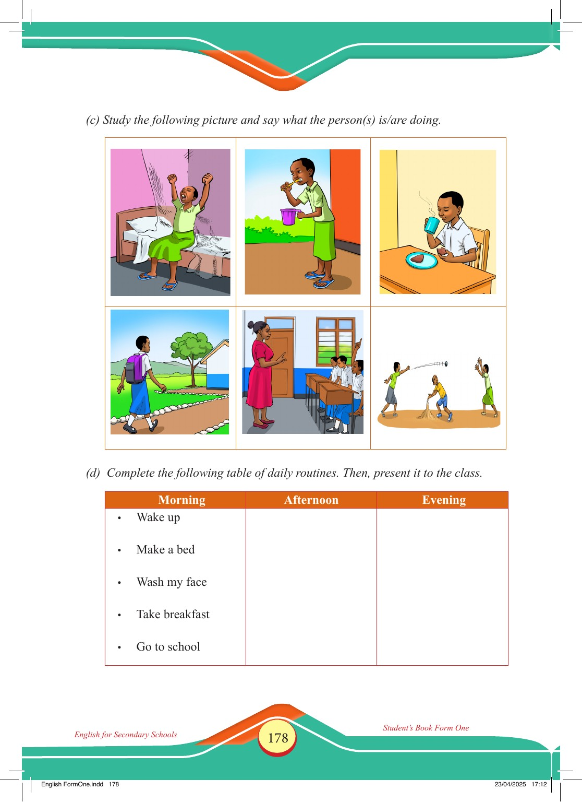

Accessible text transcript - page 178
Use the reader's read-aloud controls or select an individual segment below.
Printed book page 178. English for Secondary Schools Student’s Book Form One (c) Study the following picture and say what the person(s) is/are doing. A girl wakes up and stretches on her bed. A girl is brushing her teeth. A boy is having breakfast. A student is going to school. A teacher is teaching the class while a student raises a hand. Children are playing a game together. (d) Complete the following table of daily routines. Then, present it to the class. Morning Wake up Make a bed Wash my face Take breakfast Go to school Afternoon Evening English FormOne.indd 178 23/04/2025 17:12 Return to the page image